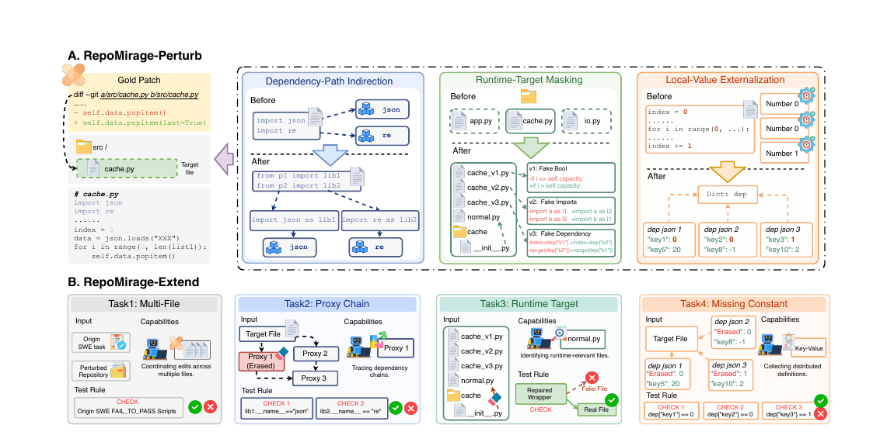
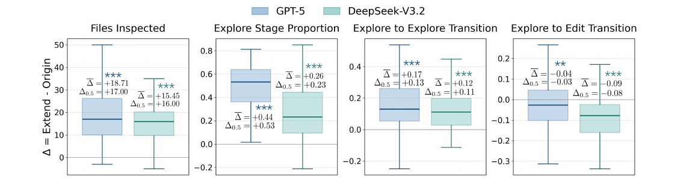
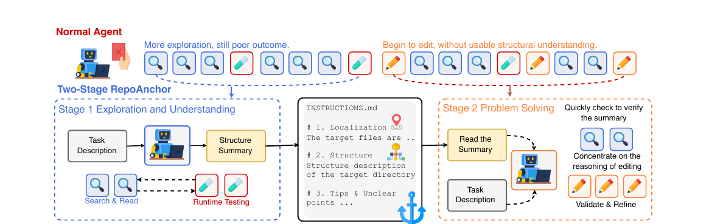
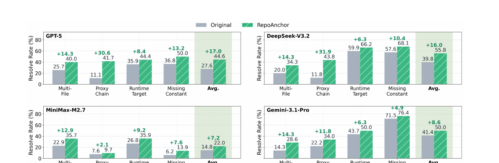

Dependency-Path Indirection
Direct imports are rerouted through multi-hop proxy paths so the true dependency can only be recovered by tracing across files.
Do high scores on repository-level issue resolution reliably mean that code agents understand the repository context?
Not necessarily. When local cues are weakened, agents inspect much more of the repository yet solve fewer tasks. RepoMirage exposes this gap and identifies exploration drift as a key behavioral bottleneck.
Code agents now perform strongly on repository-level software engineering benchmarks, but end-to-end success does not directly reveal whether agents can identify task-relevant information across files and reason over the relations among them. RepoMirage uses controlled, semantics-preserving perturbations to increase the demand for repository context reasoning without changing the underlying issue-resolution task. It then turns the same structural bottlenecks into explicit tasks, analyzes agent trajectories, and studies a structure-first mitigation with RepoAnchor.
We use perturbation as a diagnostic tool: first to test whether issue-resolution performance remains stable under higher repository-context demands, and then to make the underlying reasoning capability directly measurable.

Direct imports are rerouted through multi-hop proxy paths so the true dependency can only be recovered by tracing across files.
The real runtime target is hidden behind a wrapper and nearby decoy files, forcing agents to distinguish surface relevance from runtime relevance.
Task-relevant local values are moved to external resources, requiring agents to recover value relations across files.
Across eight frontier models, every perturbation type hurts performance, while the combined setting forces agents to inspect much more repository context.
Table 1. Performance on RepoMirage-Perturb. We compare model performance on the original SWE-Bench instances and their perturbed counterparts under the same issue task.
| Model | Resolved % | Avg. #Files | ||||
|---|---|---|---|---|---|---|
| SWE-Bench | Perturb | Drop | SWE-Bench | Perturb | Ratio | |
| GPT-4.1 | 38.40 | 18.20 | -52.60% | 1.69 | 7.10 | 4.20× |
| GPT-5 | 65.00 | 49.00 | -24.61% | 2.83 | 7.04 | 2.49× |
| Gemini-3.1-Pro | 70.60 | 54.40 | -22.95% | 17.32 | 24.94 | 1.44× |
| Claude-Sonnet-4.6 | 75.20 | 63.20 | -15.96% | 2.20 | 6.76 | 3.07× |
| DeepSeek-V3.2 | 70.00 | 52.00 | -25.71% | 4.66 | 14.32 | 3.07× |
| MiniMax-M2.7 | 78.20 | 65.40 | -16.37% | 2.24 | 6.92 | 3.09× |
| Qwen3-Coder-Next | 69.20 | 42.60 | -38.44% | 4.66 | 26.90 | 5.77× |
| Qwen3.6-35B-A3B | 67.80 | 53.40 | -21.24% | 2.52 | 11.90 | 4.72× |
66.8% → 25.3%. On the same underlying benchmark instances, average performance drops sharply when repository context reasoning becomes the explicit task objective.
Table 2. Performance on RepoMirage-Extend. Org. denotes performance on the original SWE-Bench Verified for the same instance subset, and Extend denotes performance on RepoMirage-Extend. Bold marks the best result, and underline marks the second-best result.
| Model | Multi-File | Proxy Chain | Runtime Target | Missing Constant | Avg. | ||||
|---|---|---|---|---|---|---|---|---|---|
| Org. | Extend | Org. | Extend | Org. | Extend | Org. | Extend | ||
| GPT-4.1 | 10.00 | 2.86 | 45.14 | 4.17 | 40.14 | 3.52 | 43.75 | 2.78 | 3.40 |
| GPT-5 | 31.43 | 25.71 | 70.83 | 11.11 | 68.31 | 35.92 | 72.22 | 36.80 | 27.60 |
| Gemini-3.1-Pro | 38.57 | 14.29 | 77.08 | 22.22 | 76.06 | 43.66 | 74.31 | 71.53 | 41.40 |
| Claude-Sonnet-4.6 | 41.43 | 15.71 | 80.56 | 36.81 | 80.28 | 30.28 | 81.25 | 23.61 | 28.20 |
| DeepSeek-V3.2 | 35.71 | 20.00 | 74.31 | 11.80 | 75.35 | 59.86 | 77.08 | 57.64 | 39.80 |
| MiniMax-M2.7 | 45.71 | 22.86 | 81.25 | 7.64 | 86.62 | 26.76 | 81.94 | 6.25 | 14.80 |
| Qwen3-Coder-Next | 44.29 | 17.14 | 72.92 | 29.17 | 75.35 | 7.04 | 71.53 | 34.03 | 22.60 |
| Qwen3.6-35B-A3B | 31.43 | 24.29 | 80.56 | 14.58 | 72.41 | 19.01 | 68.00 | 38.89 | 24.20 |
Under stronger repository-context demands, agents do not simply stop exploring. They inspect more files, spend longer before the first edit, and become more likely to continue exploring instead of turning gathered information into concrete edits.

RepoAnchor separates repository exploration from downstream problem solving. Stage 1 explores the task-relevant codebase and writes a structured repository summary; Stage 2 uses that summary to focus on implementation, editing, and validation.


If you find RepoMirage useful, please consider citing our work.
@article{li2026repomirage,
title={RepoMirage: Probing Repository Context Reasoning in Code Agents with Perturbations},
author={Hanyu Li and Yichi Zhang and Speed Zhu and Hang Su and Jun Zhu and Yinpeng Dong},
journal={arXiv preprint arXiv:2605.26177},
year={2026},
url={https://arxiv.org/abs/2605.26177}
}